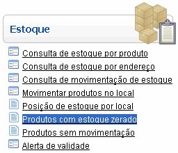
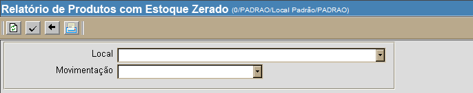
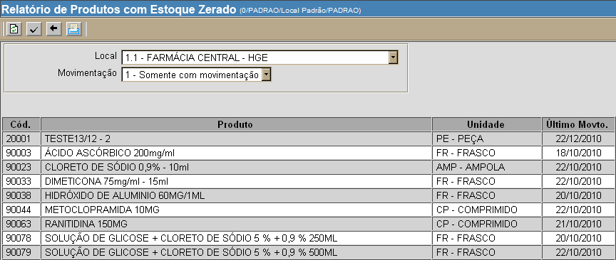
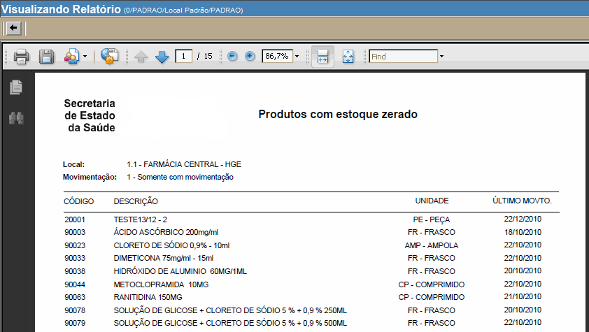

Relatório de Produtos com Estoque Zerado [ Voltar ]Utilize este formulário para obter uma visão geral dos produtos em falta no estoque. Ao gerar o relatório, todos os produtos em falta na rede ou em um determinado local serão exibidos. O formulário "Produtos com estoque zerado" encontra-se dentro do menu "Estoque". 
Ao clicar no nome do formulário, o sistema exibirá a seguinte tela: 
A tela "Relatório de produtos com estoque zerado" exibe os produtos com estoque igual a zero em toda a rede. Para gerar uma lista de produtos em falta em um determinado local, siga os passos abaixo: 1º Passo: configure os detalhes do relatório. Se desejar, você pode selecionar um local ou tipo de movimentação para o relatório. Se nenhuma seleção for feita, o relatório contemplará todos os locais e tipos de movimentação. 2º
Passo: clique no botão  3º Passo: clique no botão  para vizualizar
a tela de impressão. para vizualizar
a tela de impressão.
4° Passo: clique no botão  para
imprimir o
relatório "Produtos com Estoque Zerado". para
imprimir o
relatório "Produtos com Estoque Zerado". |